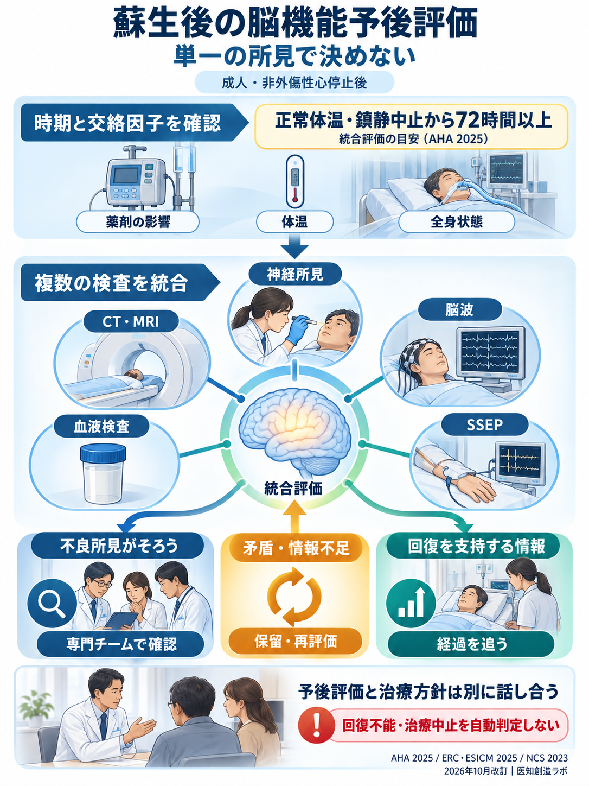

蘇生後の脳機能予後評価：2026年10月改訂図
図の「正常体温・鎮静中止から72時間以上」は、AHA 2025の検査結果を統合する評価時期の目安です。すべての検査をこの時期まで待つという意味ではありません。薬剤・体温・全身状態などの影響を除く必要があり、検査ごとの採用時期とERC/NCSとの違いは解説記事で確認してください。単独の所見や時間経過だけで回復不能を確定しません。

図の「正常体温・鎮静中止から72時間以上」は、AHA 2025の検査結果を統合する評価時期の目安です。すべての検査をこの時期まで待つという意味ではありません。薬剤・体温・全身状態などの影響を除く必要があり、検査ごとの採用時期とERC/NCSとの違いは解説記事で確認してください。単独の所見や時間経過だけで回復不能を確定しません。
